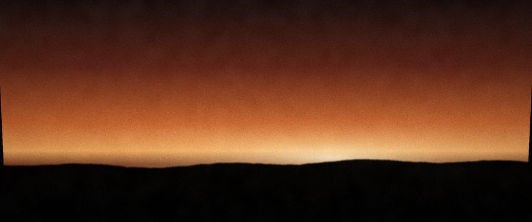
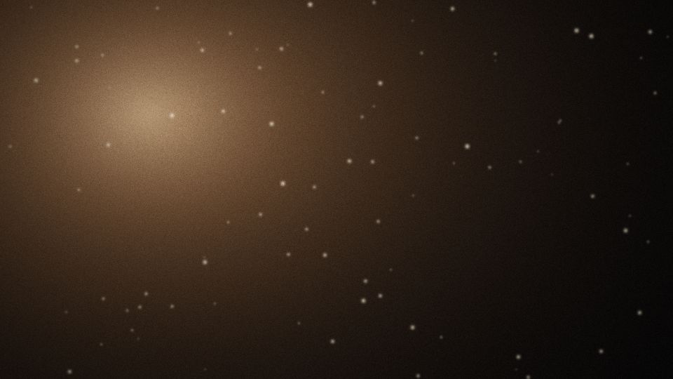

JP Silva

Filmmaker · Producer · Photographer
Austin, Texas 30.2672° N, 97.7431° W
Selected plates




About JP
The work begins before the camera is up: in the van, at soundcheck, in the quiet hour before doors. JP shoots for the feeling of a room rather than its proof, whether that room is a stage, a set, or a stretch of Hill Country at dusk. What stays is honest, and usually a little raw.
Film

Index
Commissions
Film, stills and the road, from Austin.
Instagram@jp.media
Enabled at launch